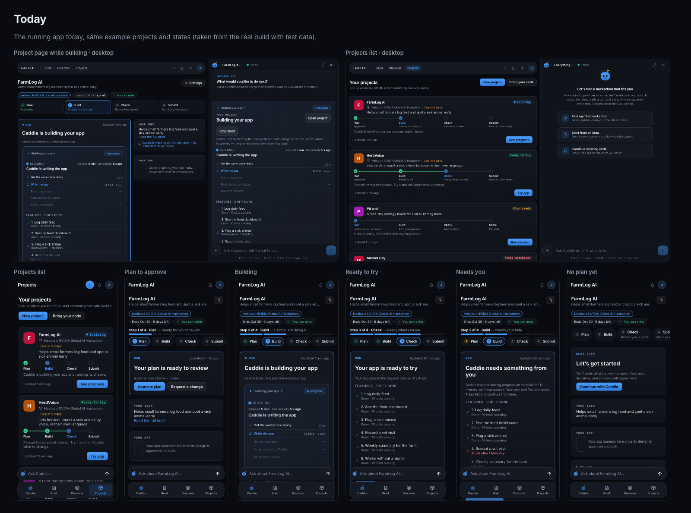
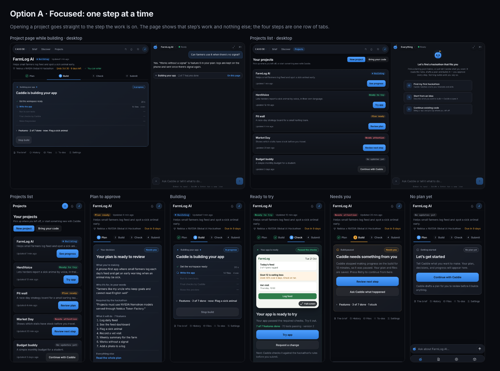
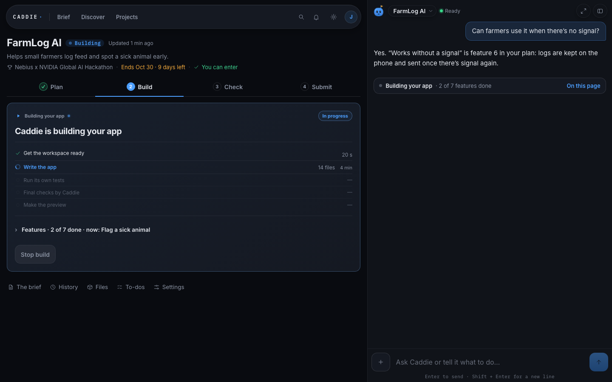
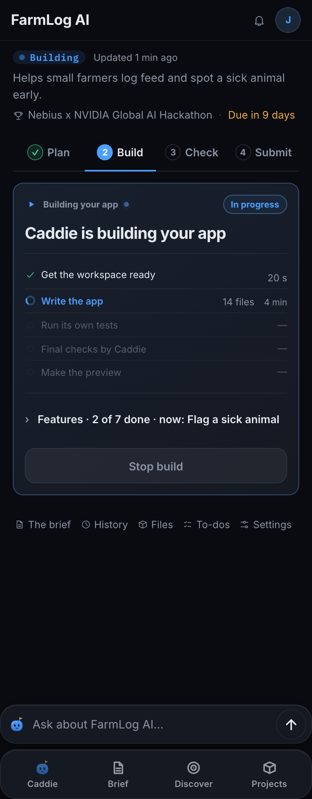
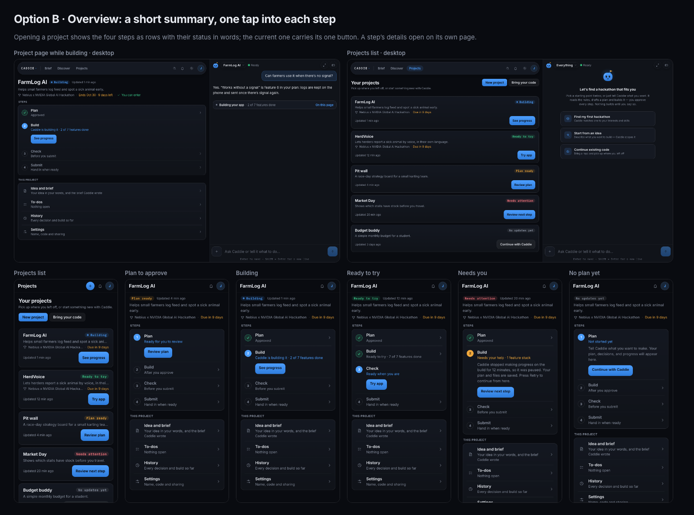
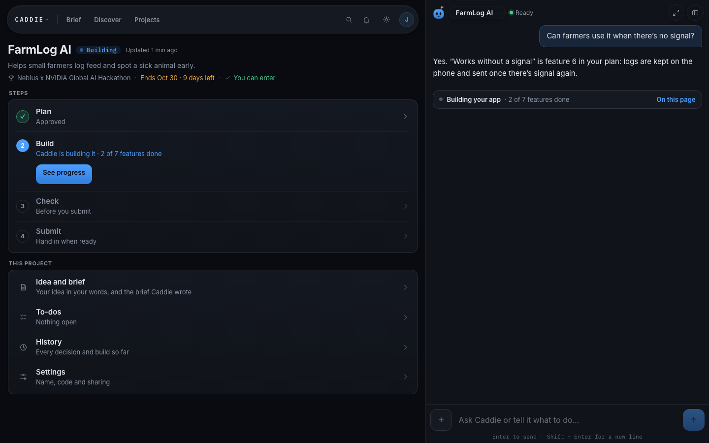
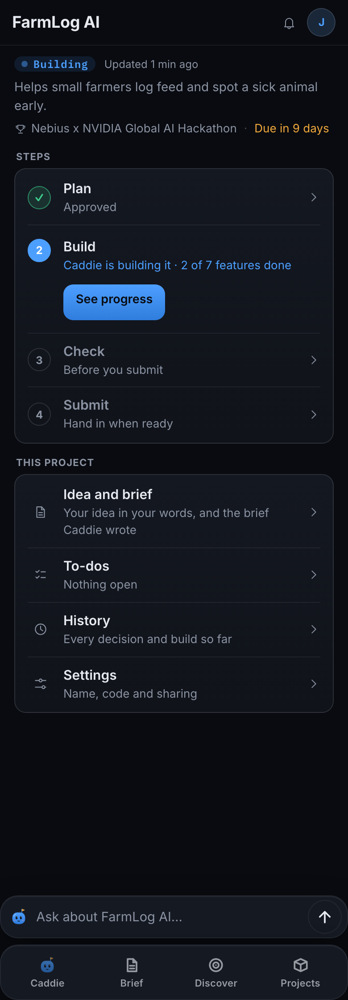
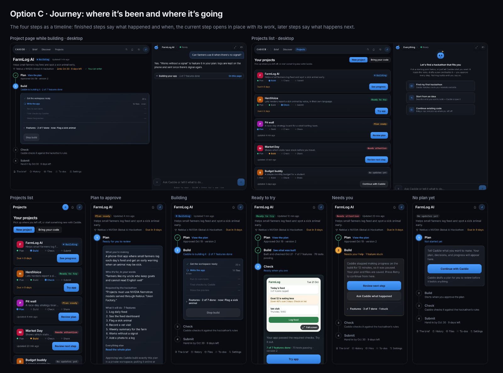
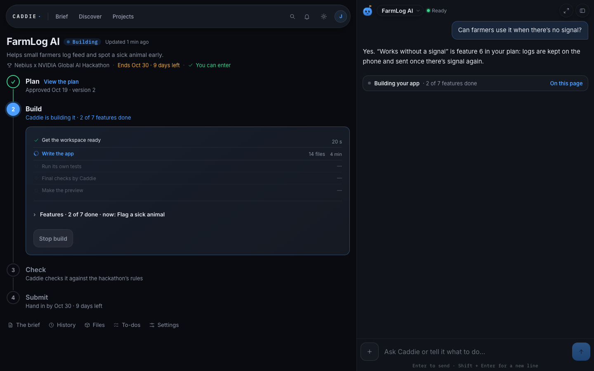
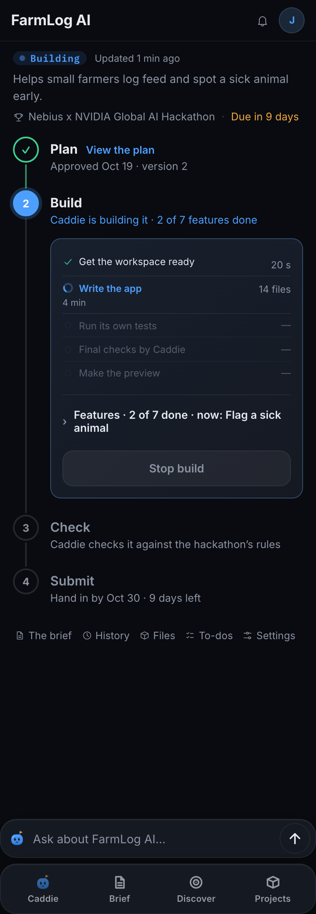

Projects redesign · three options for your review
You said the Projects cards, the project page and its details are overwhelming. These are three ways to fix it, shown in all five states on desktop and on a 390px phone. Nothing in the app has changed: these pages use the app’s real stylesheet and real page frame, and every state’s words and build lists are what the app shows for that state today. The projects are examples. 21 October 2026.
Kept in every option
- The four phone tabs (Caddie, Brief, Discover, Projects) and the chat box above them; the chat beside the page on desktop.
- The steps Plan → Build → Check → Submit (Share for a personal project).
- The card look you approved on 20 October: compact spacing, 13px corners, one outer frame.
Rules every option follows
- One header: the name once, its state once, then the hackathon and deadline on one line.
- The current step’s work is one card; nothing inside it is drawn as another card.
- The chat beside a project page doesn’t repeat the project card. It shows one line, such as “Building your app · 2 of 7 features done · On this page”.
- One main button per screen; everything else is quiet.
- The brief, history, files, to-dos and settings are one tap away, not all on the page at once.
- Every word comes from the same project status the chat and the Brief use. No made-up progress.
Today

- On desktop the build shows twice: in the page’s Now card, and again in the chat beside it as a full project card, whose “Open project” button opens the page you are already on.
- A card inside a card: the Now card wraps the “Building your app” card.
- On a phone the name shows twice, the hackathon chips take two rows, and the steps show twice (the “Step 2 of 4” line with its bar, then four step buttons).
- “Your idea” repeats the line under the name word for word, and “Your app” is an empty placeholder until the app exists.
- A Projects card is 229px tall on desktop and 266px on a phone, so 2 fit on the first phone screen.
Option A · Focused: one step at a time
Opening a project goes straight to the step the work is on. The page shows that step’s work and nothing else; the four steps are one row of tabs.
- Best when
- You come back to act: approve the plan, try the app, get a paused build going again. The work is the first thing on the page.
- Costs
- No single summary of the whole project; finished and later steps are a tab away.
- Projects card
- Leanest: name, state, one line on what it is, when it last changed, one button.

Every state, whole page


Option B · Overview: a short summary, one tap into each step
Opening a project shows the four steps as rows with their status in words; the current one carries its one button. A step’s details open on its own page.
- Best when
- You want to see the whole project before acting, especially on a phone, where a list of rows is natural.
- Costs
- One more tap to reach the build’s details, and each step still needs its own page (it would be option A’s card on its own).
- Projects card
- Option A’s card plus the hackathon and its deadline on one line.

Every state, whole page


Option C · Journey: where it’s been and where it’s going
The four steps as a timeline: finished steps say what happened and when, the current step opens in place with its work, later steps say what happens next.
- Best when
- You want the story on one page: what’s done and when, what Caddie is doing, and what happens next.
- Costs
- The longest page of the three, and the current step’s work sits lower than in A.
- Projects card
- Your Oct 20 pick, slimmer: the letter tile and the four steps on one line instead of four columns with notes.

Every state, whole page


Side by side
| Today | A | B | C | |
|---|---|---|---|---|
| Opening a project shows | Header, four step boxes, a Now card with the build card inside it, Your idea, Your app, then folds | The current step’s work | A summary of the four steps | The whole journey, current step open |
| Projects card height, desktop | 229 px | 122 px | 143 px | 139 px |
| Projects cards on the first screen (desktop / phone) | 3 / 2 | 5 / 4 | 5 / 4 | 5 / 4 |
| Framed boxes on the page while building (deepest nesting) | 5 (2) | 1 (1) | 2 (1) | 1 (1) |
| Page length while building, phone | 1729 px | 817 px | 938 px | 944 px |
| Chat beside the page (desktop) | An empty-state card and a second copy of the project card | One status line | One status line | One status line |
Measured in Chromium at 1440×900 and 390×844 on these pages. A framed box is anything bordered on all sides and rounded, at least 120×36, buttons and links excluded. Phone page length is the content height; the options fold the feature list (one tap), today shows it open.
My recommendation
Option A for the project page, with option B’s Projects card. A is the plan’s own baseline (one header and the steps, then the current step’s work), has the least to read, and puts the button you need first in every state. B’s card keeps the deadline visible for hackathon projects for one extra line. C reads well but is the longest page, and B adds a tap before you see the work.
Found while preparing this (today’s app)
- A paused build says “Press Retry to continue from here” (
apps/app/src/server/build-workflow.ts, the stalled-build message), but its button says “Review next step” (apps/app/src/server/project-experience.ts, the blocked stage’s action). - While a build is paused, the Plan step says “Paused — check with Caddie” in amber although the plan was approved: the steps read the workflow phase (
apps/app/src/client/workspace/project-status.ts,workflowSteps), which can’t tell a stuck plan from a paused build, while the Now card reads the project status, which knows the plan was approved. The options use the project status. - While building, the server marks “Stop build” as the main action, so the Now card draws it as the blue main button. The options make it quiet.
- The chat beside the project page shows “Open project” for the project you are on.
Questions for you
- Which project page: A, B or C? Mixing is fine, for example A’s page with C’s card.
- Which Projects card: A (leanest), B (adds the hackathon and deadline) or C (keeps the letter tile and the steps)?
- Is one status line in the chat beside a project page right? All three options assume it.
- Should the two wording mismatches above (the Retry button, Plan showing “Paused”) be fixed now, on their own?
Not drawn yet: the step pages option B would open (they would reuse A’s card), the Check and Submit steps’ own content, the light theme, and 320px phones. They come with the build.
How these were made
tools/capture-today.tsruns the real built app (apps/app/dist) on127.0.0.1:4179with every API answered by test data, the way the browser tests do, and saves today’s screens, the page frame and the real build lists.tools/build-mockups.tsputs each option’s page content into that frame (36 pages), with a snapshot of the app’s stylesheet;assets/review.cssholds the few new styles, built from the app’s own colours.tools/shoot-mockups.tstakes the screenshots and the measurements;tools/build-board.tswrites this page.
Words these pages use that the app doesn’t yet
- "Not started yet" under Plan for a project with no plan yet (today the step shows nothing).
- "On this page" on the one-line project status in the chat beside the project.
- Option B's "This project" group and its row descriptions.
- Option C's dated lines on finished steps ("Approved Oct 19 · version 2") and its "what happens next" lines.